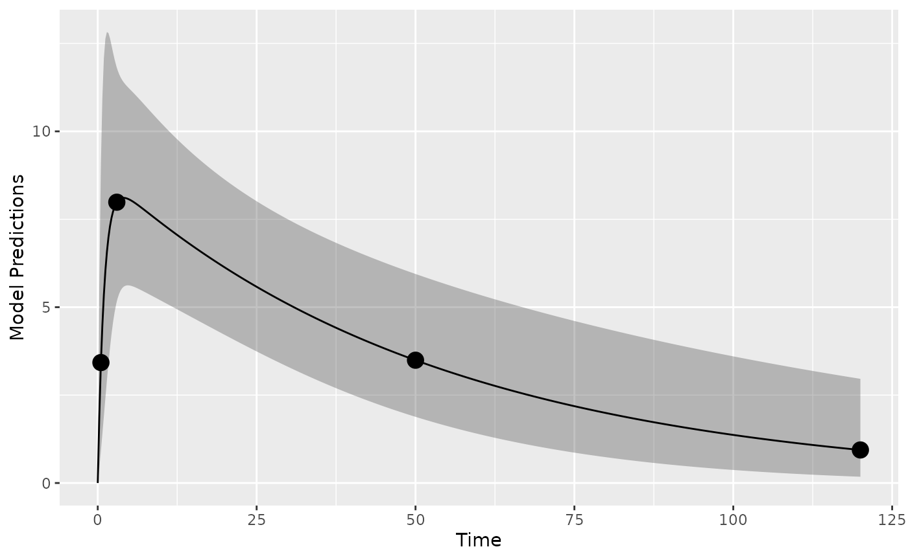
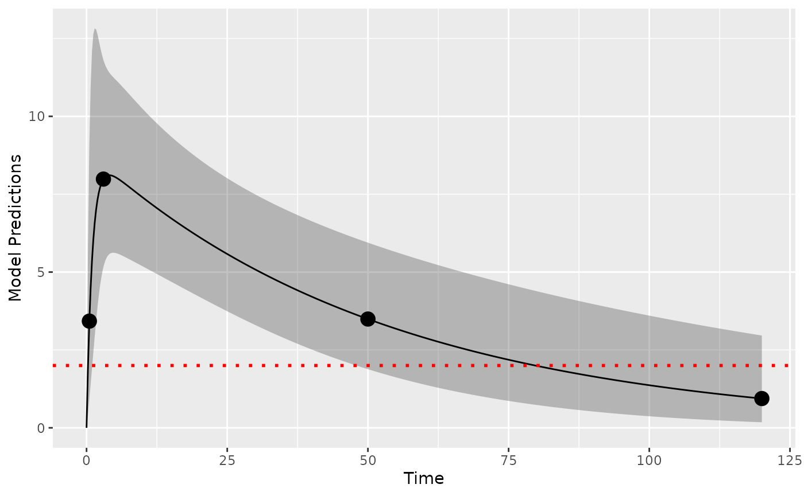
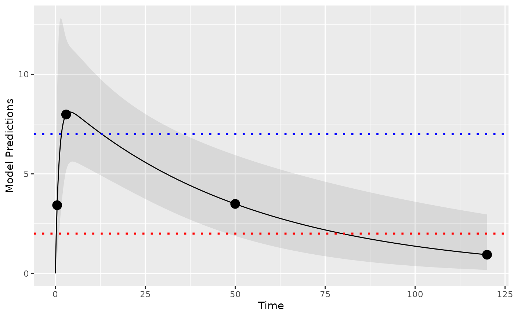

Optimal design with LOQ data in PopED
Optimization with a model for warfarin
Andrew Hooker
Source:vignettes/articles/handling_LOQ.Rmd
handling_LOQ.Rmd
library(PopED)
packageVersion("PopED")
#> [1] '0.6.0.9002'Define a model
Here we define, as an example, a one-compartment pharmacokinetic model with linear absorption (analytic solution) in PopED (Nyberg et al. 2012).
ff <- function(model_switch,xt,parameters,poped.db){
with(as.list(parameters),{
y=xt
y=(DOSE*KA/(V*(KA-CL/V)))*(exp(-CL/V*xt)-exp(-KA*xt))
return(list(y=y,poped.db=poped.db))
})}Next we define the parameters of this function. DOSEis
defined as a covariate (in vector a) so that we can
optimize the value later.
sfg <- function(x,a,bpop,b,bocc){
parameters=c( CL=bpop[1]*exp(b[1]),
V=bpop[2]*exp(b[2]),
KA=bpop[3]*exp(b[3]),
DOSE=a[1])
}We will use an additive and proportional residual unexplained
variability (RUV) model, predefined in PopED as the function
feps.add.prop.
Define an initial design and design space
Now we define the model parameter values, the initial design and design space for optimization.
We define model parameters similar to the Warfarin example from the software comparison in Nyberg et al. (2015) and an arbitrary design of two groups of 20 individuals.
Simulation
First it may make sense to check your model and design to make sure you get what you expect when simulating data. Here we plot the model typical values for the two groups:
plot_model_prediction(poped_db, model_num_points = 500,facet_scales = "free",PI=T)
Design evaluation
Next, we evaluate the initial design.
eval_full <- evaluate_design(poped_db)
round(eval_full$rse)
#> CL V KA d_CL d_V d_KA sig_prop sig_add
#> 5 4 15 34 70 28 89 36We see that the relative standard error of the parameters (in
percent) are relatively well estimated with this initial design except
for the proportional RUV parameter (sig_prop).
LOQ handling
We assume that the LOQ level is at 2 concentration units. Here shown as a red dotted line.
library(ggplot2)
plot_model_prediction(poped_db, model_num_points = 500,facet_scales = "free",PI=T) +
geom_hline(yintercept = 2,color="red",linetype="dotted",linewidth=1)
We use optimization criteria based on the D6
(loq_method=1 which is the default) and D2
(loq_method=2) methods from Vong et
al. (2012). For
the D6 method, which has been shown to be a better method in comparison
to SSE studies, we have updated the method to only investigate points
where the 95% PI overlaps LOQ, otherwise we set the design point to
either no information or full information. Further we filter out
situations with very low probabilities
(loq_prob_limit = 0.001). Both the CI% and the low
probability limit can be specified in the calculation (default values
are loq_PI_conf_level = 0.95 and
loq_prob_limit = 0.001). In this way we can get the D6
method to compute in reasonable time-frames even for larger number of
design samples.
Here we can evaluate the design with both methods and test the speed of computation. We see that D6 is significantly slower than D2 (but D6 should be a more accurate representation of the RSE expected using M3 estimation methods).
set.seed(1234)
e_time_D6 <- system.time(
eval_D6 <- evaluate_design(poped_db,loq=2)
)
e_time_D2 <- system.time(
eval_D2 <- evaluate_design(poped_db,loq=2, loq_method=2)
)
cat("D6 evaluation time: ",e_time_D6[1],"\n" )
cat("D2 evaluation time: ",e_time_D2[1],"\n" )
#> D6 evaluation time: 0.047
#> D2 evaluation time: 0.007The D2 nmethod is the same as removing the last data point
poped_db_2 <- create.poped.database(
ff_fun=ff,
fg_fun=sfg,
fError_fun=feps.add.prop,
bpop=c(CL=0.15, V=8, KA=1.0),
d=c(CL=0.07, V=0.02, KA=0.6),
sigma=c(prop=0.01,add=0.25),
groupsize=32,
xt=c( 0.5,3,50),
discrete_xt = list(c(0.5,1:120)),
minxt=0,
maxxt=120,
a=70,
mina=0,
maxa=100)
eval_red <- evaluate_design(poped_db_2)
testthat::expect_equal(eval_red$ofv,eval_D2$ofv)
testthat::expect_equal(eval_red$rse,eval_D2$rse)Predicted parameter uncertainty for the three methods is shown in the table below (as relative standard error, RSE, in percent). We see that the uncertainty is generally higher with the LOQ evaluations (as expected). We also see that because the D2 method ignores data that is below LOQ (the last observation in the design), then the predictions of uncertainty are significantly larger.
| Parameter | No LOQ | D6 | D2 |
|---|---|---|---|
| CL | 5 | 6 | 6 |
| V | 4 | 4 | 4 |
| KA | 15 | 17 | 15 |
| d_CL | 34 | 50 | 498 |
| d_V | 70 | 109 | 428 |
| d_KA | 28 | 33 | 113 |
| sig_prop | 89 | 161 | 1444 |
| sig_add | 36 | 118 | 2127 |
ULOQ handling
If needed we can also handle upper limits of quantification. Lets assume we have an ULOQ at 7 units in addition to the LLOQ of 2 units:
library(ggplot2)
plot_model_prediction(poped_db, model_num_points = 500,facet_scales = "free",
PI=T, PI_alpha = 0.1) +
geom_hline(yintercept = 2,color="red",linetype="dotted",linewidth=1) +
geom_hline(yintercept = 7,color="blue",linetype="dotted",linewidth=1)
eval_ul_D6 <-evaluate_design(poped_db,
loq=2,
uloq=7)
eval_ul_D2 <- evaluate_design(poped_db,
loq=2,
loq_method=2,
uloq=7,
uloq_method=2)
#> Problems inverting the matrix. Results could be misleading.| Parameter | No LOQ | D6 (only LLOQ) | D2 (only LLOQ) | D6 (ULOQ and LLOQ) | D2 (ULOQ and LLOQ) |
|---|---|---|---|---|---|
| CL | 5 | 6 | 6 | 6 | 6 |
| V | 4 | 4 | 4 | 8 | 0 |
| KA | 15 | 17 | 15 | 21 | 14 |
| d_CL | 34 | 50 | 498 | 59 | 276 |
| d_V | 70 | 109 | 428 | 203 | 1743 |
| d_KA | 28 | 33 | 113 | 35 | 55 |
| sig_prop | 89 | 161 | 1444 | 297 | 1645 |
| sig_add | 36 | 118 | 2127 | 122 | 6 |
Design optimization
We can then optimize the design using the different methods of computing the FIM. Here we optimize only using lower LOQ.
optim_D6 <- poped_optim(poped_db, opt_xt = TRUE,
parallel=T,
loq=2)
optim_D2 <- poped_optim(poped_db, opt_xt = TRUE,
parallel=T,
loq=2,
loq_method=2)
optim_full <- poped_optim(poped_db, opt_xt = TRUE,
parallel=T)Design points for the apraoch ignoring LOQ, using the D2 method, and using the D6 method
Predictions using the D6 method from each of the optimizations shows the expected %RSE of the parameters if each design is used and the LOQ is at 2 concentration units. We see that D2 may be a reasonable strategy to optimize designs that are “good enough” if the D6 method is too slow for optimization.
optim_full_D6<- with(optim_full,
evaluate_design(poped.db,
loq=2))
optim_D2_D6<- with(optim_D2,
evaluate_design(poped.db,
loq=2))
optim_D6_D6<- with(optim_D6,
evaluate_design(poped.db,
loq=2))| Parameter | No LOQ | D6 | D2 |
|---|---|---|---|
| CL | 7 | 5 | 6 |
| V | 4 | 3 | 3 |
| KA | 16 | 17 | 16 |
| d_CL | 67 | 34 | 43 |
| d_V | 58 | 54 | 52 |
| d_KA | 30 | 39 | 30 |
| sig_prop | 114 | 96 | 93 |
| sig_add | 152 | 60 | 92 |
References
Version information
sessionInfo()
#> R version 4.3.2 (2023-10-31)
#> Platform: x86_64-pc-linux-gnu (64-bit)
#> Running under: Ubuntu 22.04.3 LTS
#>
#> Matrix products: default
#> BLAS: /usr/lib/x86_64-linux-gnu/openblas-pthread/libblas.so.3
#> LAPACK: /usr/lib/x86_64-linux-gnu/openblas-pthread/libopenblasp-r0.3.20.so; LAPACK version 3.10.0
#>
#> locale:
#> [1] LC_CTYPE=C.UTF-8 LC_NUMERIC=C LC_TIME=C.UTF-8
#> [4] LC_COLLATE=C.UTF-8 LC_MONETARY=C.UTF-8 LC_MESSAGES=C.UTF-8
#> [7] LC_PAPER=C.UTF-8 LC_NAME=C LC_ADDRESS=C
#> [10] LC_TELEPHONE=C LC_MEASUREMENT=C.UTF-8 LC_IDENTIFICATION=C
#>
#> time zone: UTC
#> tzcode source: system (glibc)
#>
#> attached base packages:
#> [1] stats graphics grDevices utils datasets methods base
#>
#> other attached packages:
#> [1] PopED_0.6.0.9002 kableExtra_1.3.4 knitr_1.45 ggplot2_3.4.4
#>
#> loaded via a namespace (and not attached):
#> [1] sass_0.4.7 utf8_1.2.4 generics_0.1.3 xml2_1.3.5
#> [5] gtools_3.9.4 stringi_1.8.1 digest_0.6.33 magrittr_2.0.3
#> [9] evaluate_0.23 grid_4.3.2 pkgload_1.3.3 mvtnorm_1.2-3
#> [13] fastmap_1.1.1 rprojroot_2.0.4 jsonlite_1.8.7 brio_1.1.3
#> [17] httr_1.4.7 rvest_1.0.3 purrr_1.0.2 fansi_1.0.5
#> [21] viridisLite_0.4.2 scales_1.2.1 codetools_0.2-19 textshaping_0.3.7
#> [25] jquerylib_0.1.4 cli_3.6.1 rlang_1.1.2 munsell_0.5.0
#> [29] withr_2.5.2 cachem_1.0.8 yaml_2.3.7 tools_4.3.2
#> [33] memoise_2.0.1 dplyr_1.1.3 colorspace_2.1-0 webshot_0.5.5
#> [37] vctrs_0.6.4 R6_2.5.1 lifecycle_1.0.4 stringr_1.5.1
#> [41] fs_1.6.3 ragg_1.2.6 pkgconfig_2.0.3 desc_1.4.2
#> [45] pkgdown_2.0.7 pillar_1.9.0 bslib_0.5.1 gtable_0.3.4
#> [49] glue_1.6.2 systemfonts_1.0.5 highr_0.10 xfun_0.41
#> [53] tibble_3.2.1 tidyselect_1.2.0 rstudioapi_0.15.0 farver_2.1.1
#> [57] htmltools_0.5.7 labeling_0.4.3 rmarkdown_2.25 svglite_2.1.2
#> [61] testthat_3.2.0 compiler_4.3.2